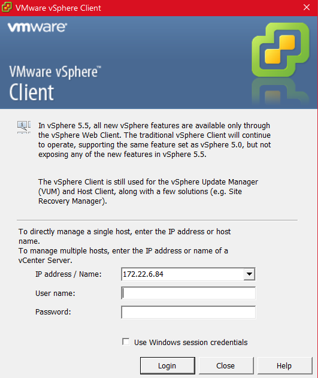
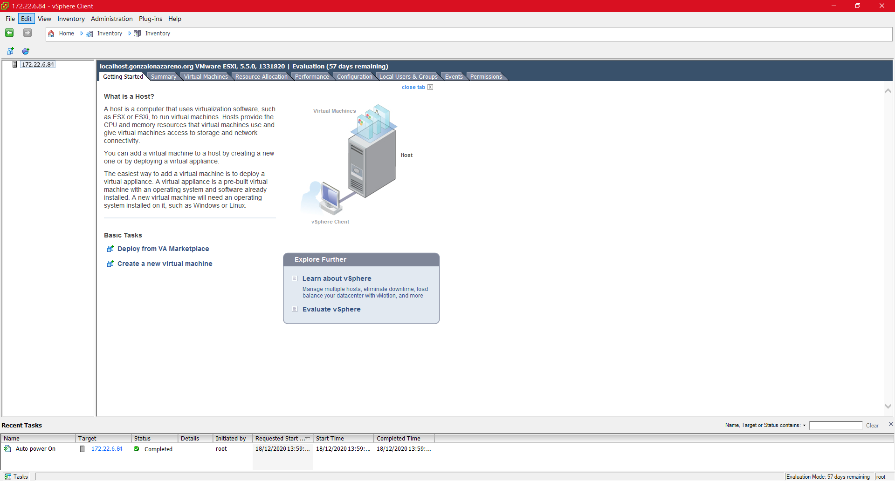
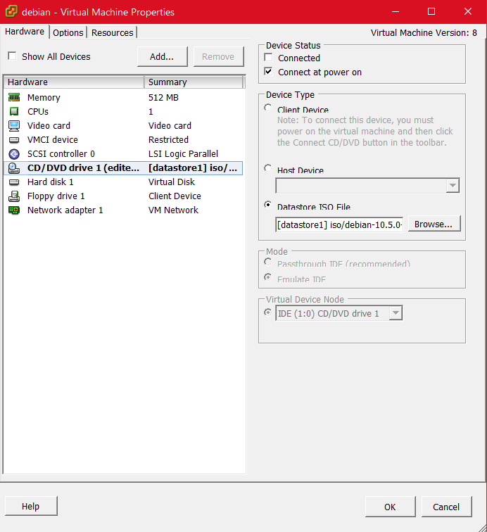

Vamos a utilizar un servidor físico para instalar la versión adecuada del sistema de virtualización VMWare ESXi (hay que tener en cuenta que recibe diferentes denominaciones comerciales, pero nos referimos al sistema de virtualización de VMWare que proporciona virtualización de alto rendimiento mediante la técnica de la paravirtualización).
Realizaremos la configuración del servicio para que permita su gestión remota desde un equipo cliente e instalaremos en nuestro equipo la aplicación cliente que permita gestionar remotamente el hipervisor.
Instalaremos una máquina virtual que tenga acceso internet.
Como dice el título de la práctica, voy a realizar la instalación de VMWare ESXi en su versión 5.5 sobre el servidor físico que tengo asignado.
En mi caso, dispongo de un servidor Dell PowerEdge 2900, que recibe el nombre de Panoramix.
Lo primero que he tenido que hacer, obviamente, ha sido preparar un medio de arranque, en mi caso descargué la ISO de VMWare y cree un medio de instalación USB, con el que realicé la primera instalación, en la que descubrí, que este modelo de servidor en concreto, no es compatible con dicha ISO.
Para resolver este problema, estuve investigando y acabé descargando una ISO que supuestamente sí era compatible con este servidor. Dejo aquí la página desde donde descargué la ISO.
Volví a realizar el mismo proceso para la creación de un USB de arranque con esta ISO. Lógicamente había configurado previamente la BIOS del servidor para que hiciera el arranque mediante el USB.
El proceso de instalación la verdad que es de lo más trivial que he llegado a experimentar, simplemente nos pide que especifiquemos en que unidad de se va a almacenar el sistema y nos pide una contraseña de superusuario. Después de indicar estos parámetros se instalará el sistema.
Una vez ya había instalado VMWare ESXi, volví a la BIOS para modificar de nuevo la secuencia de arranque y poner en primer lugar la unidad de almacenamiento SATA.
Al iniciar el sistema, nos aparece una ventana en la que nos indica la dirección IP y los datos del sistema. En este punto, debemos cambiar la IP y establecerla estática, para ello, pulsamos la tecla F2 y se nos abrirá un menú bastante simple en el que la configuraremos.
Hecho esto, tenemos que introducir la dirección IP desde un navegador, para descargar las herramientas necesarias para llevar a cabo la gestión remota.

Descargué e instalé la aplicación llamada vSphere Client.

En ella, introducimos nuestras credenciales y se nos abrirá un administrador.
Con estos pasos, ya habríamos instalado correctamente VMWare ESXi 5.5 en nuestro servidor y tendríamos acceso remoto a él mediante una herramienta gráfica.

Para terminar, voy a crear una máquina virtual de prueba, que correrá un sistema Debian 10.
Para ello, en primer lugar, debemos subir el archivo .iso a nuestro servidor. Nos dirigimos al apartado denominado Storage y subimos la ISO. En mi caso la almaceno en una carpeta llamada iso.
Cuando tenemos la ISO en nuestro servidor, crearemos la propia máquina virtual. Es un proceso muy sencillo en el que tendremos que ir indicando los parámetros y características que queremos que posea nuestra máquina.
Una vez lleguemos al apartado CD/DVD drive 1, debemos seleccionar la opción Datastore ISO File y seleccionar el archivo .iso que acabamos de almacenar. También, es muy importante tener seleccionada la opción Connect at power on, ya que sino, no nos detectará la ISO en el arranque.

Con esto, ya podríamos encender nuestra mv y realizar el proceso de instalación del sistema, por lo que hemos llegado al final del post.